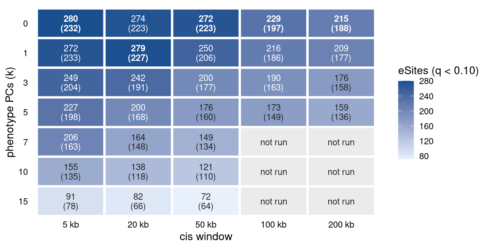
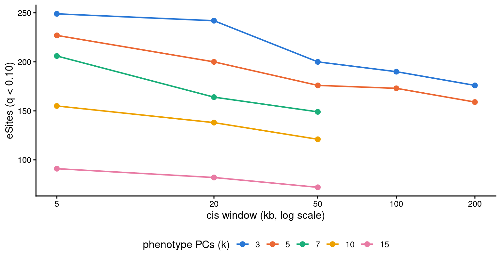
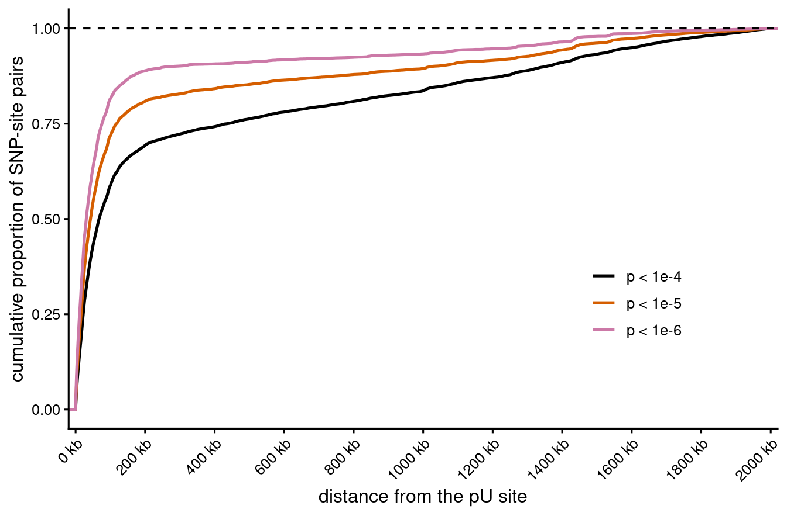

Last updated: 2026-11-18
Checks: 6 1
Knit directory: pumseq/
This reproducible R Markdown analysis was created with workflowr (version 1.7.0). The Checks tab describes the reproducibility checks that were applied when the results were created. The Past versions tab lists the development history.
The R Markdown file has unstaged changes. To know which version of
the R Markdown file created these results, you’ll want to first commit
it to the Git repo. If you’re still working on the analysis, you can
ignore this warning. When you’re finished, you can run
wflow_publish to commit the R Markdown file and build the
HTML.
Great job! The global environment was empty. Objects defined in the global environment can affect the analysis in your R Markdown file in unknown ways. For reproduciblity it’s best to always run the code in an empty environment.
The command set.seed(20260202) was run prior to running
the code in the R Markdown file. Setting a seed ensures that any results
that rely on randomness, e.g. subsampling or permutations, are
reproducible.
Great job! Recording the operating system, R version, and package versions is critical for reproducibility.
Nice! There were no cached chunks for this analysis, so you can be confident that you successfully produced the results during this run.
Great job! Using relative paths to the files within your workflowr project makes it easier to run your code on other machines.
Great! You are using Git for version control. Tracking code development and connecting the code version to the results is critical for reproducibility.
The results in this page were generated with repository version 50ffa83. See the Past versions tab to see a history of the changes made to the R Markdown and HTML files.
Note that you need to be careful to ensure that all relevant files for
the analysis have been committed to Git prior to generating the results
(you can use wflow_publish or
wflow_git_commit). workflowr only checks the R Markdown
file, but you know if there are other scripts or data files that it
depends on. Below is the status of the Git repository when the results
were generated:
Ignored files:
Ignored: analysis/qtl_mapping_summary_cache/
Unstaged changes:
Modified: analysis/stage2_cis_qtl_mapping.Rmd
Note that any generated files, e.g. HTML, png, CSS, etc., are not included in this status report because it is ok for generated content to have uncommitted changes.
These are the previous versions of the repository in which changes were
made to the R Markdown
(analysis/stage2_cis_qtl_mapping.Rmd) and HTML
(docs/stage2_cis_qtl_mapping.html) files. If you’ve
configured a remote Git repository (see ?wflow_git_remote),
click on the hyperlinks in the table below to view the files as they
were in that past version.
| File | Version | Author | Date | Message |
|---|---|---|---|---|
| Rmd | 50ffa83 | XSun | 2026-11-18 | update |
| html | 50ffa83 | XSun | 2026-11-18 | update |
| Rmd | 287146d | XSun | 2026-11-16 | update |
| html | 287146d | XSun | 2026-11-16 | update |
suppressMessages({ library(data.table); library(ggplot2) })
knitr::opts_chunk$set(echo = TRUE, warning = FALSE, message = FALSE)
Q <- "/project/xinhe/xsun/pumseq/pumseq_processed/psi_qtl/qtl_betabinomial"
OLD <- file.path(Q, "pc_window_selection/fold5_union_auto_noUCcalled/summary") # k = 3..15, 5-50 kb
NEW <- file.path(Q, "pc_window_selection_w200kb/fold5_union_auto_noUCcalled/summary") # k = 3, 5, 5-200 kb
NOM <- file.path(Q, "nominal_wide_window/fold5_union_auto_noUCcalled/w2000kb_pc3/summary")
fmt <- function(x) format(x, big.mark = ",", trim = TRUE, scientific = FALSE)
pct <- function(x) sprintf("%.0f%%", 100 * x)
th <- theme_classic(base_size = 12) + theme(strip.background = element_blank(), legend.position = "bottom")
so <- fread(file.path(OLD, "selection_table.tsv")); sn <- fread(file.path(NEW, "selection_table.tsv"))
co <- fread(file.path(OLD, "selection_no_inheritedC.tsv")); cn <- fread(file.path(NEW, "selection_no_inheritedC.tsv"))
# k = 3 and 5 from the extended run (all five windows, deduplicated genotypes); k = 7, 10, 15 from the first run
ST <- rbind(sn[, src := "extended run"], so[!npcs %in% sn$npcs][, src := "first run"], fill = TRUE)
SC <- rbind(cn, co[!npcs %in% cn$npcs], fill = TRUE)
chk <- merge(sn[window_kb <= 50, .(window_kb, npcs, a = disc_q10)], so[, .(window_kb, npcs, b = disc_q10)], by = c("window_kb", "npcs"))
stopifnot(nrow(chk) > 0, all(chk$a == chk$b)) # the extended run reproduces the first one at 5-50 kb (q < 0.10)
G <- fread(file.path(Q, "calibration_grid/grid_calibration.tsv"))
lam3 <- G[npcs == 3, sprintf("%.2f-%.2f", min(perm_lambda_min), max(perm_lambda_max))]
S <- fread(file.path(NOM, "strong_pairs_p0.0001.tsv.gz"))[, absd := abs(dist_bp)]
EN <- fread(file.path(NOM, "enrichment_by_distance.tsv"))
FL <- fread(file.path(Q, "stage1_open_questions/farlead.tsv"))
e <- function(k, w, v = "disc_q10") ST[npcs == k & window_kb == w, get(v)]Stage 2 identifies Ψ sites with at least one significant cis-QTL (eSites), following the approach of the m6A-QTL study (Zhang et al. 2020).
knitr::kable(data.table(
item = c("test", "fitter", "covariates", "genotypes", "site significance", "FDR", "status"),
value = c("beta-binomial likelihood-ratio test per SNP-site pair: logit(mean) = intercept + k PCs (+ genotype)",
"maximum likelihood with three starting values of the overdispersion (a single start sometimes stopped at a false optimum)",
"k phenotype PCs; k under review (section 2)",
"8.54 M biallelic SNPs with MAF >= 0.05; duplicated variant IDs (hg19 -> hg38 liftover collisions) removed",
"per-site permutations of phenotype and covariates together across cell lines; beta approximation; Storey q-values",
"10%, as in the paper",
"k under review (0-1 PCs give more eSites; calibration at k = 0/1 being checked); cis window pending; final scan (about 1,000 permutations) not yet run")),
col.names = c("", ""))| test | beta-binomial likelihood-ratio test per SNP-site pair: logit(mean) = intercept + k PCs (+ genotype) |
| fitter | maximum likelihood with three starting values of the overdispersion (a single start sometimes stopped at a false optimum) |
| covariates | k phenotype PCs; k under review (section 2) |
| genotypes | 8.54 M biallelic SNPs with MAF >= 0.05; duplicated variant IDs (hg19 -> hg38 liftover collisions) removed |
| site significance | per-site permutations of phenotype and covariates together across cell lines; beta approximation; Storey q-values |
| FDR | 10%, as in the paper |
| status | k under review (0-1 PCs give more eSites; calibration at k = 0/1 being checked); cis window pending; final scan (about 1,000 permutations) not yet run |
For each site, every cis SNP is tested and the smallest p-value is kept. The phenotype and the covariates are then permuted together across the 50 cell lines (genotypes fixed) and the scan is repeated; the minima of the permutations are fitted with a beta distribution, which turns the site’s smallest p-value into a permutation p-value that accounts for the number of SNPs tested. Storey q-values across sites give the eSites (q < 0.10). The scans below use 100 permutations per site; the final scan will use more.
At k = 3 the permutations are well calibrated in bulk (genomic-control lambda of permuted data 1.01-1.07); the same check at k = 0 and 1 is running. QQ plots for every configuration: permutation check page.
The scan was run for k = 0, 1, 3, 5, 7, 10 and 15 phenotype PCs: all at 5, 20 and 50 kb, and k = 0, 1, 3 and 5 also at 100 and 200 kb. As in the paper, k is chosen to maximise discoveries.
ws <- sort(unique(ST$window_kb)); ks <- sort(unique(ST$npcs))
hm <- merge(CJ(npcs = ks, window_kb = ws), ST[, .(npcs, window_kb, disc_q10, disc_q05)], by = c("npcs", "window_kb"), all.x = TRUE)
hm[, `:=`(w = factor(paste0(window_kb, " kb"), paste0(ws, " kb")), k = factor(npcs, rev(ks)),
lab = fifelse(is.na(disc_q10), "not run", sprintf("%d\n(%d)", disc_q10, disc_q05)))]
hm[!is.na(disc_q10), best := disc_q10 == max(disc_q10), by = window_kb]
hm[, ink := fifelse(!is.na(disc_q10) & disc_q10 > mean(range(disc_q10, na.rm = TRUE)), "white", "grey15")]
ggplot(hm, aes(w, k)) +
geom_tile(aes(fill = disc_q10), colour = "white", linewidth = 1.2) +
geom_text(aes(label = lab, colour = ink, fontface = fifelse(best %in% TRUE, "bold", "plain")), size = 3.4, lineheight = 0.9) +
scale_fill_gradient(low = "#e8f0fb", high = "#1a4f8f", na.value = "grey92", name = "eSites (q < 0.10)") +
scale_colour_identity() +
labs(x = "cis window", y = "phenotype PCs (k)") +
theme_classic(base_size = 12) + theme(axis.line = element_blank(), axis.ticks = element_blank(), legend.position = "right")
eSites at q < 0.10, with q < 0.05 in brackets; the best k in each window is in bold. k = 0, 1, 3 and 5 come from one run over all five windows, and k = 7, 10, 15 from the first run (5-50 kb); the two runs agree exactly where they overlap.
ts <- sn[window_kb == min(ws), setNames(tested_sites, npcs)]
bk <- ST[, .SD[which.max(disc_q10)], by = window_kb]
stopifnot(all(bk$npcs %in% c(0, 1))) # the text below says k = 0 or 1 gives the most eSites at every windowFewer PCs give more eSites. k = 0 or k = 1 gives the most eSites at every window: 280 and 272 at 5 kb against 249 at k = 3, and 272 and 250 at 50 kb against 200. Phenotype PCs therefore do not increase power here.
k = 0 is tested on fewer sites than the other settings (9,071 against 10,086 at k = 1, at 5 kb). With no PCs the null model is intercept-only, and at about a thousand shallow sites its dispersion estimate runs to the boundary (no overdispersion); the optimiser then stops at its iteration limit and the fit is discarded, although the best fit is simply the binomial one. Before switching, the calibration of k = 0 and 1 is being checked (1 real + 5 genome-wide permutations, as for k = 3).
pd <- ST[, .(k = factor(npcs), window_kb, eSites = disc_q10)]
ggplot(pd, aes(window_kb, eSites, colour = k)) + geom_line(linewidth = 0.8) + geom_point(size = 2.4) +
scale_x_log10(breaks = ws) +
scale_colour_manual(values = c(`0` = "#2a78d6", `1` = "#eb6834", `3` = "#1baf7a", `5` = "#eda100", `7` = "#e87ba4",
`10` = "#008300", `15` = "#6250d6"), name = "phenotype PCs (k)") +
labs(x = "cis window (kb, log scale)", y = "eSites (q < 0.10)") + th
Among k = 3 to 15, discoveries fall as k grows; k = 0 and 1 give the most at every window.
To choose its window, the paper tested every SNP within 2 Mb of each peak and looked at how far the strongly associated SNPs lie (their Fig. 1c). We did the same: a nominal scan of every SNP within +/-2 Mb of each site at k = 3 (133,049 SNP-site pairs with p < 1e-4), drawn with the paper’s own plotting choices.
CUTS <- c(1e-4, 1e-5, 1e-6); LAB <- c("p < 1e-4", "p < 1e-5", "p < 1e-6")
ec <- rbindlist(lapply(seq_along(CUTS), function(j) S[p_nominal < CUTS[j], .(absd, cutoff = LAB[j])]))[, cutoff := factor(cutoff, LAB)]
ggplot(ec, aes(absd, colour = cutoff)) + stat_ecdf(geom = "step", linewidth = 0.9) +
geom_hline(yintercept = 1, linetype = 2) +
scale_colour_manual(values = setNames(c("black", "#D55E00", "#CC79A7"), LAB), name = NULL) +
scale_x_continuous(breaks = seq(0, 2e6, 2e5), labels = paste(seq(0, 2e6, 2e5) / 1000, "kb"), expand = c(0.01, 0.01)) +
labs(x = "distance from the pU site", y = "cumulative proportion of SNP-site pairs") + th +
theme(axis.text.x = element_text(angle = 45, hjust = 1), legend.position = c(0.8, 0.3))
sh <- rbindlist(lapply(seq_along(CUTS), function(j) S[p_nominal < CUTS[j], .(cutoff = LAB[j], n = .N,
w5 = mean(absd <= 5e3), w20 = mean(absd <= 2e4), w50 = mean(absd <= 5e4), w100 = mean(absd <= 1e5), w200 = mean(absd <= 2e5))]))knitr::kable(sh[, .(cutoff, pairs = fmt(n), `within 5 kb` = pct(w5), `within 50 kb` = pct(w50),
`within 100 kb` = pct(w100), `within 200 kb` = pct(w200))])| cutoff | pairs | within 5 kb | within 50 kb | within 100 kb | within 200 kb |
|---|---|---|---|---|---|
| p < 1e-4 | 133,049 | 8% | 43% | 59% | 69% |
| p < 1e-5 | 72,475 | 11% | 54% | 72% | 81% |
| p < 1e-6 | 45,046 | 14% | 64% | 82% | 89% |
Most strongly associated SNPs lie within 100 kb of the site (82% at p < 1e-6), which is the paper’s criterion for its 100 kb window. Few are within 5 kb (14%).
knitr::kable(data.table(window = paste0(ws, " kb"), `eSites, k = 0` = sapply(ws, function(w) e(0, w)),
`k = 1` = sapply(ws, function(w) e(1, w)), `k = 3` = sapply(ws, function(w) e(3, w)),
`strong pairs within the window (p < 1e-6)` = c(pct(sh[cutoff == "p < 1e-6"]$w5), pct(sh[cutoff == "p < 1e-6"]$w20), pct(sh[cutoff == "p < 1e-6"]$w50),
pct(sh[cutoff == "p < 1e-6"]$w100), pct(sh[cutoff == "p < 1e-6"]$w200))))| window | eSites, k = 0 | k = 1 | k = 3 | strong pairs within the window (p < 1e-6) |
|---|---|---|---|---|
| 5 kb | 280 | 272 | 249 | 14% |
| 20 kb | 274 | 279 | 242 | 38% |
| 50 kb | 272 | 250 | 200 | 64% |
| 100 kb | 229 | 216 | 190 | 82% |
| 200 kb | 215 | 209 | 176 | 89% |
eSites at q < 0.10 (all tested sites). The distance profile comes from the +/-2 Mb scan at k = 3.
Decision pending: 5 kb or 100 kb.
qtl_betabinomial/pc_window_selection/
(k = 3-15, 5-50 kb) and
qtl_betabinomial/pc_window_selection_w200kb/ (k = 3, 5,
5-200 kb); scripts 47.scan_pc_window_selection.R,
48.pc_window_selection_summary.R,
50.selection_inheritedC_setaside.R.qtl_betabinomial/nominal_wide_window/; scripts
56.scan_nominal_wide_window.R,
57.window_distance_summary.R,
59.paper_style_fig1c.R.
sessionInfo()R version 4.2.0 (2022-04-22)
Platform: x86_64-pc-linux-gnu (64-bit)
Running under: CentOS Linux 8
Matrix products: default
BLAS/LAPACK: /software/openblas-0.3.13-el8-x86_64/lib/libopenblas_skylakexp-r0.3.13.so
locale:
[1] C
attached base packages:
[1] stats graphics grDevices utils datasets methods base
other attached packages:
[1] ggplot2_3.4.2 data.table_1.14.4 workflowr_1.7.0
loaded via a namespace (and not attached):
[1] tidyselect_1.2.0 xfun_0.38 bslib_0.3.1 colorspace_2.0-3
[5] vctrs_0.6.1 generics_0.1.3 htmltools_0.5.7 yaml_2.3.5
[9] utf8_1.2.2 rlang_1.1.2 R.oo_1.24.0 jquerylib_0.1.4
[13] later_1.3.0 pillar_1.9.0 glue_1.6.2 withr_2.5.0
[17] R.utils_2.11.0 lifecycle_1.0.4 stringr_1.5.0 munsell_0.5.0
[21] gtable_0.3.0 R.methodsS3_1.8.1 evaluate_0.15 labeling_0.4.2
[25] knitr_1.42 callr_3.7.0 fastmap_1.1.0 httpuv_1.6.5
[29] ps_1.7.0 fansi_1.0.3 highr_0.9 Rcpp_1.0.11
[33] promises_1.2.0.1 scales_1.2.0 jsonlite_1.8.7 farver_2.1.0
[37] fs_1.5.2 digest_0.6.29 stringi_1.7.6 processx_3.5.3
[41] dplyr_1.1.2 getPass_0.2-2 rprojroot_2.0.3 grid_4.2.0
[45] cli_3.6.2 tools_4.2.0 magrittr_2.0.3 sass_0.4.1
[49] tibble_3.2.1 whisker_0.4 pkgconfig_2.0.3 rmarkdown_2.21
[53] httr_1.4.5 rstudioapi_0.14 R6_2.5.1 git2r_0.30.1
[57] compiler_4.2.0